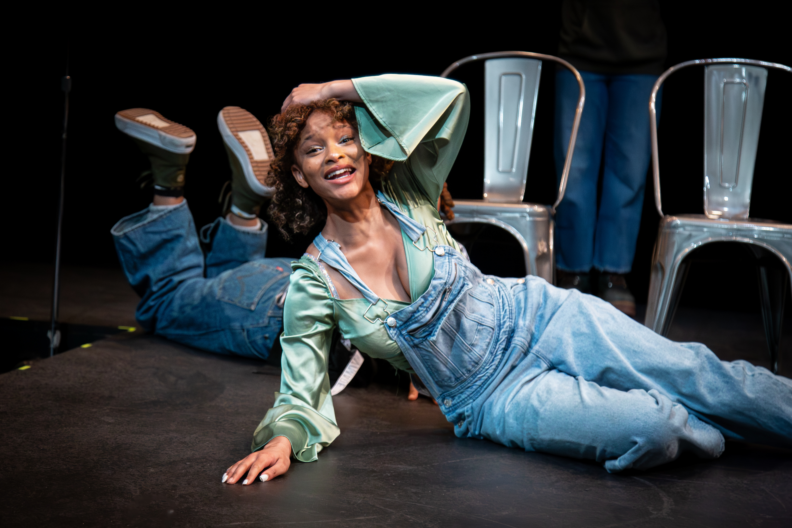

Who is Anaya?
Anaya Brodie is an Actor who attends Howard University. She grew up watching shows as a child which sparked a love for live theatre and an eventual love for performing. She got her start in children's theatre programs at Alliance Theatre while living in Atlanta, Georgia.
Her love for theatre began with children's improv, and she still does improv today with the Howard Improv Players (HIP). Since then, she has been in several shows and made a name for herself doing several productions at NextStop Theatre in Herndon Virginia.
Anaya has trained in Meisner, Uta Hagen, and LeCoq acting techniques at Howard University as well as long form, short form, and musical improv. She has also trained at Actor Therapy under Ryan Scott Oliver and Lindsey Mendez. Anaya has experience doing Shakespeare and Commedia Del Arte through a traveling players ensemble.